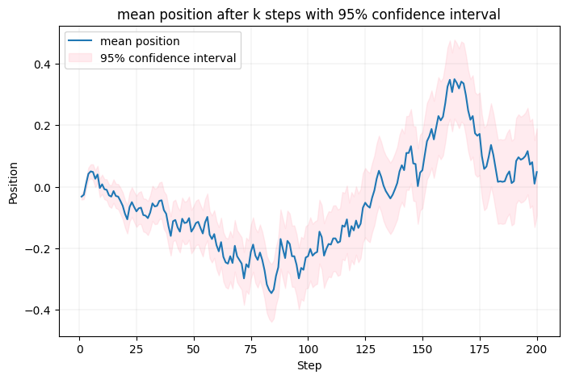
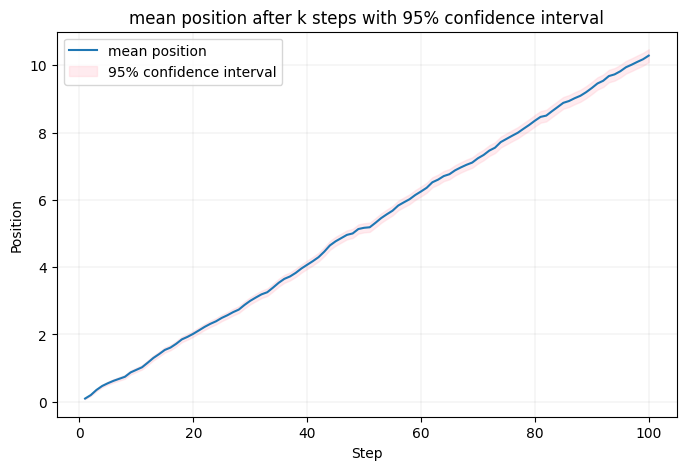
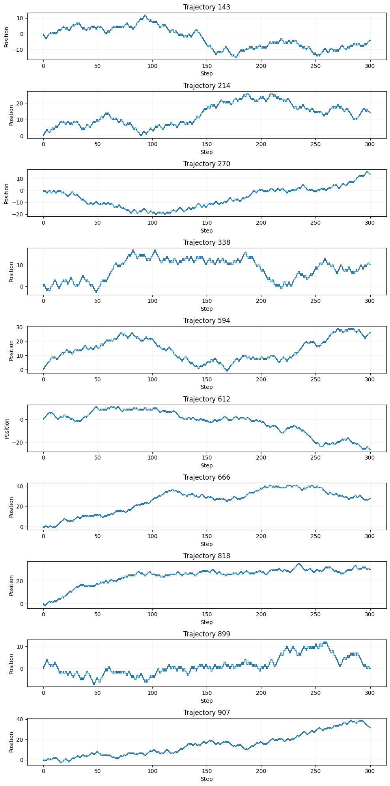
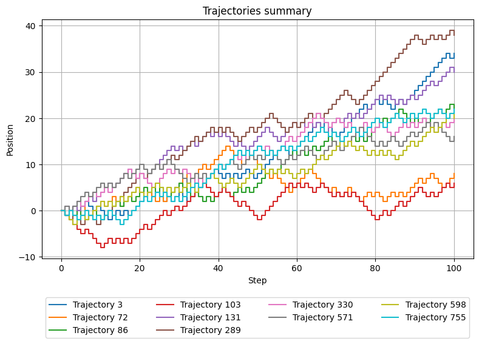
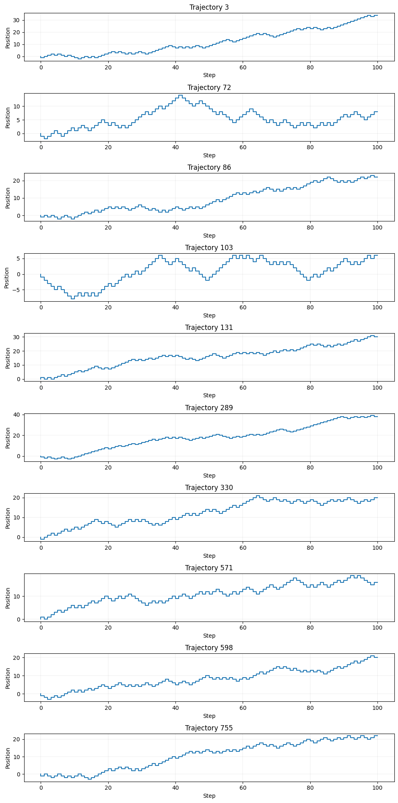
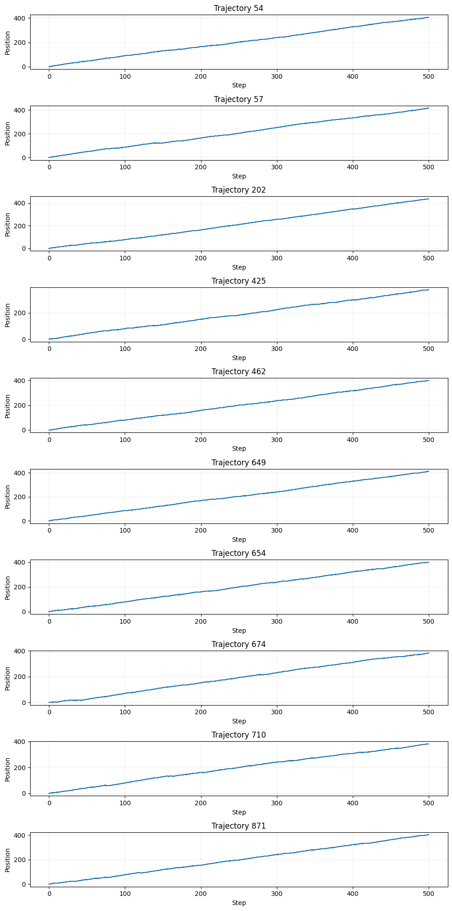
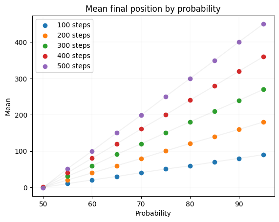

Symulacja wędrówki losowej
REDACTED
Symulacja wędrówki losowejZasymulować wędrówkę losową dla różnych wartości p oraz liczby kroków N.Instalacja i uruchomienieKrótki opis działaniaZbadać i przedstawić wyniki:Wyniki zbiorczeWyniki poszczególnych symulacjiPrzedstawić wyniki na wykresach:Średnia pozycja cząsteczki po K krokach z uwzględnieniem 95% przedziału ufnościPrzykładowe wykresy:Histogram pozycji końcowych dla różnych wartości p.Przykładowe wykresy:Przykładowe trajektorie wędrówki.Przykładowe wykresy (po 10 losowych dla każdej wartości p oraz N na wykresie zbiorczym, oraz indywidualnym):Skomentować wpływ parametrów p oraz N:Jak zmienia się średnia pozycja oraz rozkład pozycji końcowych dla różnych wartości p?Jak liczba kroków N wpływa na rozrzut wyników (rozpiętość końcowych pozycji)?
Zasymulować wędrówkę losową dla różnych wartości p oraz liczby kroków N.
Instalacja i uruchomienie
Symulacja oraz tworzenie wykresów zostały zaimplementowane w pliku main.py. W celu uruchomienia symulacji należy wykonać poniższe polecenie:
xxxxxxxxxx11pip install -r requirements.txt && python main.pyLub używając venv:
xxxxxxxxxx11python3 -m venv .venv && source .venv/bin/activate && pip install -r requirements.txt && python main.pyKrótki opis działania
Program przeprowadza eksperymenty dla wszystkich kombinacji następujących parametrów:
| Parametr | Symbol | Jednostka | Możliwe wartości |
|---|---|---|---|
| Liczba symulacji na experyment | M | liczba | 1000 |
| Prawdopodobieństwo ruchu cząsteczki w górę | p | % | [50%, 55%, 60%, ..., 90%, 95%] |
| Liczba kroków w symulacji | N | Liczba | [100, 200, 300, 400, 500] |
[[ x ]] podstawione zmienne z tabeli powyżej
Dla każdego eksperymentu zapisuje :
surowe wyniki dla danej każdej z 1000 symulacji z danego eksperymentu Lokalizacja:
rawdata/results_[[ p ]]_[[ N ]].csv
wiersz do tabeli "wyniki zbiorcze" dotyczący wskaźników pozycji końcowej cząsteczki Lokalizacja:
cumulative_results.csvWykreś średniej pozycji po N krokach + 95% przedział ufności Lokalizacja:
charts/mean/mean_95_percent_confidence_interval_[[ p ]]_[[ N ]].pngHistogram pozycji końcowych Lokalizacja:
charts/histograms/histogram_[[ p ]]_[[ N ]].pngWykres zbiorczy 10 losowych przykładowych trajektorii wędrówki Lokalizacja:
charts/trajectories/trajectories_summary_[[ p ]]_[[ N ]].pngWykres 10 pojedynczych losowych przykładowych trajektorii wędrówki Lokalizacja:
charts/trajectories/trajectories_random_[[ p ]]_[[ N ]].pngPunkt na wykresie zależności rozpiętości pozycji końcowych ze względu na
pLokalizacja:charts/max_minus_min_by_probability.pngPunkt na wykresie zależności średnich pozycji końcowych ze względu na
pLokalizacja:charts/mean_final_position_by_probability.pngPunkt na wykresie zależności rozpiętości pozycji końcowych ze względu na
NLokalizacja:charts/max_minus_min_by_number_of_steps.pngPunkt na wykresie zależności średnich pozycji końcowych ze względu na
NLokalizacja:charts/mean_final_position_by_number_of_steps.png
Zbadać i przedstawić wyniki:
Wyniki zbiorcze
| probability | number_of_steps | mean | std | min | max | max_minus_min | median |
|---|---|---|---|---|---|---|---|
| 50 | 100 | -0.034 | 9.568847579515518 | -28 | 32 | 60 | 0.0 |
| 50 | 200 | 0.048 | 14.444850154986034 | -50 | 42 | 92 | 0.0 |
| 50 | 300 | -0.534 | 18.061197191769985 | -70 | 52 | 122 | 0.0 |
| 50 | 400 | 0.908 | 19.671693775575097 | -72 | 54 | 126 | 0.0 |
| 50 | 500 | -1.222 | 22.366911185946083 | -64 | 68 | 132 | -2.0 |
| 55 | 100 | 10.29 | 9.70195341155584 | -22 | 48 | 70 | 10.0 |
| 55 | 200 | 20.4 | 14.154575232058361 | -28 | 62 | 90 | 20.0 |
| 55 | 300 | 30.64 | 17.088428833570394 | -18 | 80 | 98 | 30.0 |
| 55 | 400 | 40.296 | 19.59796887435022 | -22 | 106 | 128 | 40.0 |
| 55 | 500 | 51.692 | 21.958167865284206 | -16 | 114 | 130 | 52.0 |
| 60 | 100 | 20.46 | 9.79614209778523 | -10 | 50 | 60 | 20.0 |
| 60 | 200 | 39.802 | 13.962120039592842 | -4 | 90 | 94 | 40.0 |
| 60 | 300 | 59.224 | 16.981573072009553 | -6 | 112 | 118 | 60.0 |
| 60 | 400 | 80.44 | 19.642566023816745 | 18 | 136 | 118 | 80.0 |
| 60 | 500 | 99.988 | 21.56515374394535 | 36 | 170 | 134 | 100.0 |
| 65 | 100 | 29.872 | 9.624116375023736 | 0 | 58 | 58 | 30.0 |
| 65 | 200 | 59.628 | 13.107464133080814 | 16 | 98 | 82 | 60.0 |
| 65 | 300 | 90.752 | 16.36393889013278 | 24 | 140 | 116 | 90.0 |
| 65 | 400 | 119.72 | 19.607590366998185 | 46 | 178 | 132 | 120.0 |
| 65 | 500 | 149.89 | 20.719650093570596 | 62 | 216 | 154 | 150.0 |
| 70 | 100 | 40.422 | 8.897747804922322 | 10 | 66 | 56 | 40.0 |
| 70 | 200 | 79.426 | 12.76724418188984 | 32 | 122 | 90 | 80.0 |
| 70 | 300 | 119.76 | 16.298417101056167 | 64 | 174 | 110 | 120.0 |
| 70 | 400 | 160.788 | 18.949698045087686 | 82 | 218 | 136 | 160.0 |
| 70 | 500 | 198.688 | 20.84338398629167 | 122 | 260 | 138 | 200.0 |
| 75 | 100 | 50.444 | 8.844595185761754 | 18 | 78 | 60 | 50.0 |
| 75 | 200 | 100.264 | 12.152460820755605 | 62 | 142 | 80 | 100.0 |
| 75 | 300 | 150.452 | 14.83467883036232 | 100 | 198 | 98 | 150.0 |
| 75 | 400 | 199.61 | 17.6627262901286 | 140 | 260 | 120 | 200.0 |
| 75 | 500 | 250.086 | 19.150681554451264 | 184 | 312 | 128 | 250.0 |
| 80 | 100 | 59.384 | 8.222198246211288 | 32 | 84 | 52 | 60.0 |
| 80 | 200 | 120.75 | 11.19578045515363 | 72 | 150 | 78 | 120.0 |
| 80 | 300 | 180.432 | 13.811204726597893 | 136 | 220 | 84 | 180.0 |
| 80 | 400 | 240.186 | 16.128279635472595 | 196 | 304 | 108 | 240.0 |
| 80 | 500 | 299.786 | 17.18063456336814 | 238 | 352 | 114 | 300.0 |
| 85 | 100 | 69.932 | 7.181321326886857 | 42 | 92 | 50 | 70.0 |
| 85 | 200 | 140.024 | 10.235595927936975 | 108 | 170 | 62 | 140.0 |
| 85 | 300 | 210.034 | 12.304586299425104 | 168 | 244 | 76 | 210.0 |
| 85 | 400 | 279.598 | 13.699138513059864 | 234 | 322 | 88 | 280.0 |
| 85 | 500 | 349.452 | 15.635462768974891 | 300 | 392 | 92 | 350.0 |
| 90 | 100 | 79.926 | 6.359758171503064 | 50 | 98 | 48 | 80.0 |
| 90 | 200 | 159.754 | 8.82629503245841 | 128 | 184 | 56 | 160.0 |
| 90 | 300 | 239.546 | 10.765773729741863 | 198 | 268 | 70 | 240.0 |
| 90 | 400 | 319.914 | 11.942051917488888 | 274 | 354 | 80 | 320.0 |
| 90 | 500 | 400.614 | 13.807353258318555 | 356 | 440 | 84 | 400.0 |
| 95 | 100 | 90.132 | 4.386180114860766 | 72 | 100 | 28 | 90.0 |
| 95 | 200 | 180.126 | 6.13417671737618 | 158 | 196 | 38 | 180.0 |
| 95 | 300 | 269.978 | 7.801250925332424 | 240 | 290 | 50 | 270.0 |
| 95 | 400 | 360.024 | 8.860667243498089 | 330 | 386 | 56 | 360.0 |
| 95 | 500 | 450.37 | 9.46589140017991 | 418 | 482 | 64 | 450.0 |
Wyniki poszczególnych symulacji
Surowe wyniki każdej z symulacji dla danego eksperymentu
id - liczba porządkowa
final - pozycja końcowa
steps - wykonane kroki gdzie
+oznacza krok w górę a-oznacza krok w dół
Przykład dla 50% prawdopodobieństwa oraz 100 kroków (pierwsze 11 wierszy pliku):
| id | final | steps |
|---|---|---|
| 0 | 6 | ---++-+-++-------+-+++-++-++-+-+-+++-+++-----+-++-+--++---+--+-+++-++---+++--+++-+--++-++-++-+++-+++ |
| 1 | 10 | +-++-++----++--+++-+--++++--+----++---+--++--+++++-++-++-+++++--+-++-++---++--+-+-++++-+--++-++-+--+ |
| 2 | 6 | +--++--+++-+---+++---+-++-++-+++++-+---++---++++-+-++--++--+++++-+-++----+-+---++-+---+--+++--+-+-++ |
| 3 | 0 | --+-+----+-+--++++--+++--+---+++---+-+++-++--+++--++--++++-+---++-++--+-+---+-++-+-+++-----+++-++-+- |
| 4 | -16 | +------+++----++-+--+--++----+--++++---+-+---+++-----+---+--++--+++--++-++-++---+------+++-+--++++-- |
| 5 | -4 | --+----+++-+--+--+++--+-+++--+-+-+-+++-+-++--+++----------+-+-+--+-+++++------++-+++-++++++-++--+--- |
| 6 | -6 | +--+---++-----+++-++-++-++++-++-----+---+++++-----++++-----+--++++-+---++-++++--++-+-----+---+-+--++ |
| 7 | 30 | -+---+---+++++++---+-+---++-+++-++-++++--++++++-++-++--++++++-+-+++++++++-++-+----+--+++++-+-+++++++ |
| 8 | -16 | ++-+-----+--++-+---+---+----+--++----+-++-+-+--++++---+++++-------+-+-+--+-+-+--+-++---+--+--++--+++ |
| 9 | -4 | +--++-++-+-+++-+--++--++--+++--+++----+--+-+-----+++----+---+++-+---+-++---+++++--++-+-+-+--++----++ |
Przedstawić wyniki na wykresach:
Średnia pozycja cząsteczki po K krokach z uwzględnieniem 95% przedziału ufności
Przykładowe wykresy:
dla 50% prawdopodobieństwa oraz 200 kroków:

dla 55% prawdopodobieństwa oraz 100 kroków:

Średnia pozycja po K krokach oscyluje wokół wartości oczekiwanej po K krokach. Wraz ze wzrostem p zmniejsza się przedział nieufności
Histogram pozycji końcowych dla różnych wartości p.
Przykładowe wykresy:
dla 50% prawdopodobieństwa oraz 300 kroków:

dla 75% prawdopodobieństwa oraz 500 kroków:

dla 95% prawdopodobieństwa oraz 500 kroków:

Przy wzrastającej liczbie powtórzeń rozkłady pozycji końcowych coraz bardziej przypominają rozkład normalny
Przykładowe trajektorie wędrówki.
Przykładowe wykresy (po 10 losowych dla każdej wartości p oraz N na wykresie zbiorczym, oraz indywidualnym):
dla 50% prawdopodobieństwa oraz 300 kroków:


dla 60% prawdopodobieństwa oraz 100 kroków:


dla 90% prawdopodobieństwa oraz 500 kroków:


Wykresy przedstawiają przykładowe trajektorie oraz pozycje końcowe.
Skomentować wpływ parametrów p oraz N:
Jak zmienia się średnia pozycja oraz rozkład pozycji końcowych dla różnych wartości p?
Wraz ze wzrostem wartości p, średnia pozycja cząsteczki rośnie, a rozkład pozycji końcowych staje się bardziej skupiony wokół wartości oczekiwanej.


Jak liczba kroków N wpływa na rozrzut wyników (rozpiętość końcowych pozycji)?
Wraz ze wzrostem liczby kroków N, rozpiętość końcowych pozycji rośnie. Średnia pozycja końcowa zbliża się do wartości oczekiwanej.